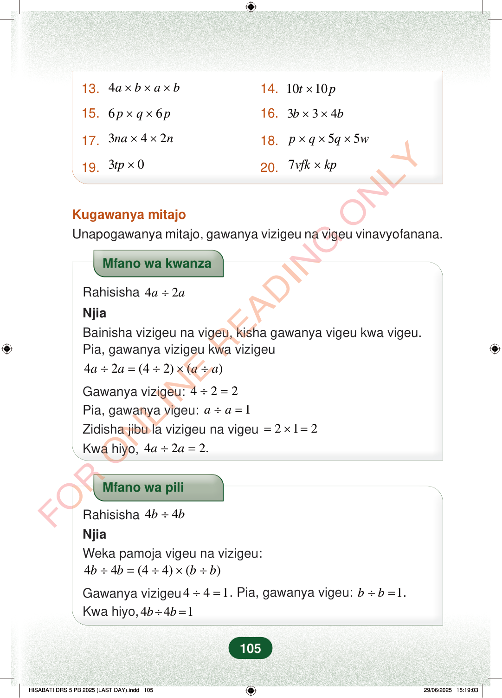

13.4abab×××14.1010tp×15.66pqp××16.334bb××17.342nan××18.55pqqw×××19.30tp×20.7vfkkp×Kugawanya mitajoUnapogawanya mitajo, gawanya vizigeu na vigeu vinavyofanana.Mfano wa kwanzaRahisisha42aa÷NjiaBainisha vizigeu na vigeu, kisha gawanya vigeu kwa vigeu.Pia, gawanya vizigeu kwa vizigeu42(42)()aaaa÷=÷×÷Gawanya vizigeu:422÷=Pia, gawanya vigeu:1aa÷=Zidisha jibu la vizigeu na vigeu212=×=Kwa hiyo,422.aa÷=Mfano wa piliRahisisha44bb÷NjiaWeka pamoja vigeu na vizigeu:44(44)()bbbb÷=÷×÷Gawanya vizigeu441÷=. Pia, gawanya vigeu:1bb÷=.Kwa hiyo,441bb÷=105
13. 4 a b a b × × × 14. 10 10 t p ×
15. 6 6 p q p × × 16. 3 3 4 b b × ×
17. 3 4 2 na n × × 18. 5 5 p q q w × × ×
19. 3 0 tp × 20. 7 vfk kp ×
Kugawanya mitajo Unapogawanya mitajo, gawanya vizigeu na vigeu vinavyofanana.
Mfano wa kwanza
Rahisisha 4 2 a a ÷
Njia Bainisha vizigeu na vigeu, kisha gawanya vigeu kwa vigeu. Pia, gawanya vizigeu kwa vizigeu
4 2 (4 2) ( ) a a a a ÷ = ÷ × ÷
Gawanya vizigeu: 4 2 2 ÷ = Pia, gawanya vigeu: 1 a a ÷ =
Zidisha jibu la vizigeu na vigeu 2 1 2 = × = Kwa hiyo, 4 2 2. a a ÷ =
Mfano wa pili
Rahisisha 4 4 b b ÷
Njia Weka pamoja vigeu na vizigeu:
4 4 (4 4) ( ) b b b b ÷ = ÷ × ÷
Gawanya vizigeu 4 4 1 ÷ = . Pia, gawanya vigeu: 1 b b ÷ = . Kwa hiyo, 4 4 1 b b ÷ =
105
Maswali ya 13 hadi 20 ya kuzidisha aljebra, kama 4a × b × a × b, 10t × 10p, na 3tp × 0.13. 4a × b × a × b14. 10t × 10p15. 6p × q × 6p16. 3b × 3 × 4b17. 3na × 4 × 2n18. p × q × 5q × 5w19. 3tp × 020. 7vfk × kpKugawanya mitajoUnapogawanya mitajo, gawanya vizigeu na vigeu vinavyofanana.Mfano wa kwanza unaonyesha jinsi ya kurahisisha 4a ÷ 2a kwa kugawanya namba na herufi kwa herufi hadi kupata jibu 2.Mfano wa kwanzaRahisisha 4a ÷ 2aNjiaBainisha vizigeu na vigeu, kisha gawanya vigeu kwa vigeu.Pia, gawanya vizigeu kwa vizigeu4a ÷ 2a = (4 ÷ 2) × (a ÷ a)Gawanya vizigeu: 4 ÷ 2 = 2Pia, gawanya vigeu: a ÷ a = 1Zidisha jibu la vizigeu na vigeu = 2 × 1 = 2Kwa hiyo, 4a ÷ 2a = 2.Mfano wa pili unaonyesha 4b ÷ 4b. Namba 4 hugawanywa kwa 4 na b hugawanywa kwa b, hivyo jibu ni 1.Mfano wa piliRahisisha 4b ÷ 4bNjiaWeka pamoja vigeu na vizigeu:4b ÷ 4b = (4 ÷ 4) × (b ÷ b)Gawanya vizigeu 4 ÷ 4 = 1.Pia, gawanya vigeu: b ÷ b = 1.Kwa hiyo, 4b ÷ 4b = 1Mfano wa tatu unaonyesha kurahisisha 4k² ÷ 2k. 4 hugawanywa kwa 2 na k² hugawanywa kwa k, hivyo jibu ni 2k.Mfano wa tatuRahisisha <math><mrow><mn>4</mn><msup><mi>k</mi><mn>2</mn></msup><mo>÷</mo><mn>2</mn><mi>k</mi></mrow></math>Njia<math><mrow><mn>4</mn><msup><mi>k</mi><mn>2</mn></msup><mo>÷</mo><mn>2</mn><mi>k</mi><mo>=</mo><mrow><mo fence="true" form="prefix" stretchy="false">(</mo><mn>4</mn><mo>÷</mo><mn>2</mn><mo fence="true" form="postfix" stretchy="false">)</mo></mrow><mo>×</mo><mrow><mo fence="true" form="prefix" stretchy="false">(</mo><msup><mi>k</mi><mn>2</mn></msup><mo>÷</mo><mi>k</mi><mo fence="true" form="postfix" stretchy="false">)</mo></mrow></mrow></math><math><mrow><mo>=</mo><mn>2</mn><mo>×</mo><mi>k</mi></mrow></math>= 2kKwa hiyo, <math><mrow><mn>4</mn><msup><mi>k</mi><mn>2</mn></msup><mo>÷</mo><mn>2</mn><mi>k</mi><mo>=</mo><mn>2</mn><mi>k</mi></mrow></math>